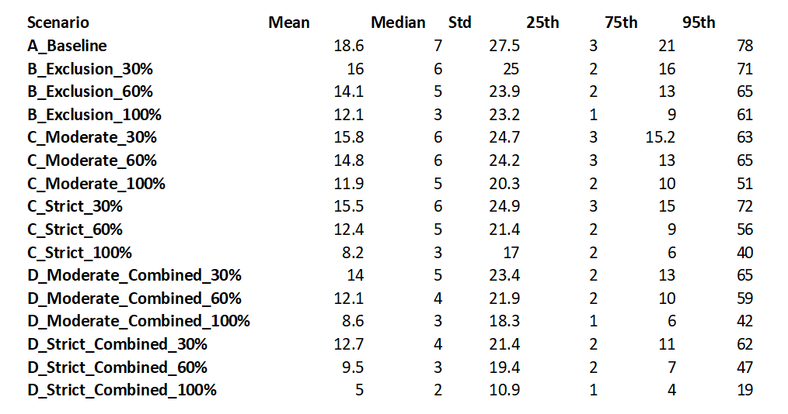
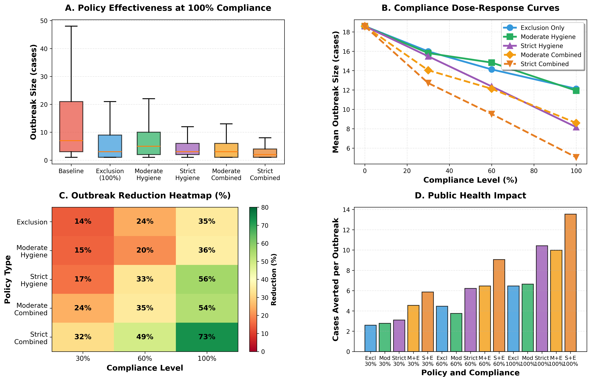
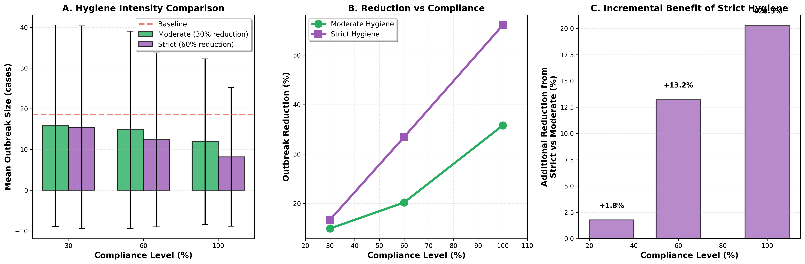
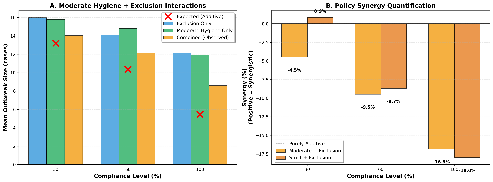
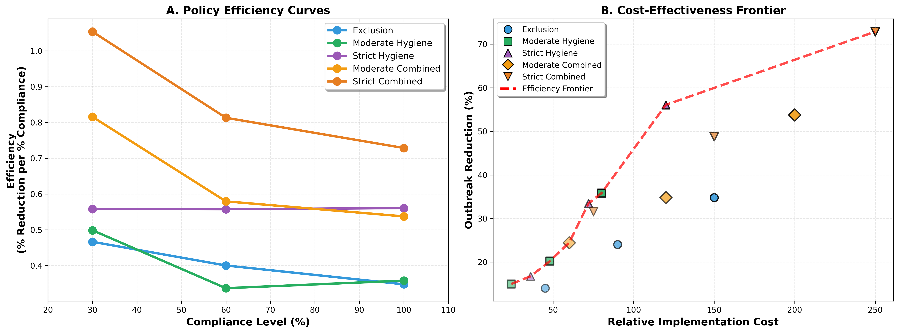
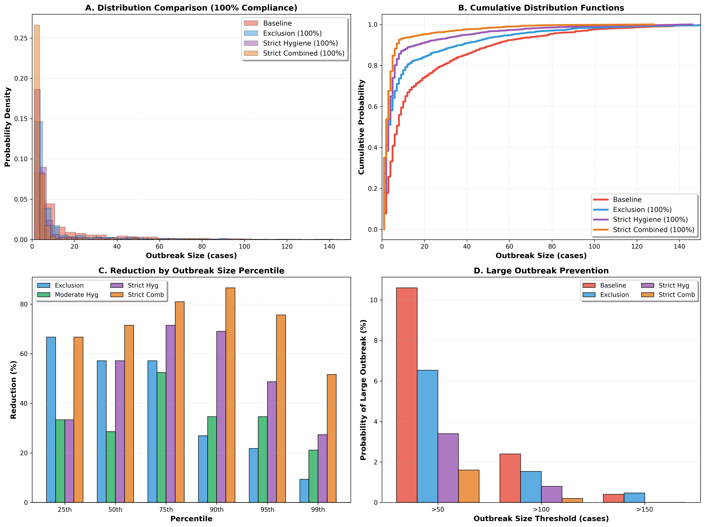

👥 Team
Shrey Patel
Jaiti Swami

Natasha Kodgi
📌 Project Summary
This project develops a stochastic mechanistic SEIR-type model to simulate norovirus transmission in a single restaurant. After calibrating the simulator to CDC NORS restaurant outbreak data, we evaluate two public-health policies:
- Illness exclusion — removing symptomatic food workers from shifts
- Hand hygiene & glove-use improvement
We test policy effectiveness under 16 scenarios (various compliance levels and intensities) and quantify expected reductions in outbreak size, tail risk, and cost-effectiveness.
📂 Downloads
📁 Data & Methods
We use a cleaned subset of the CDC National Outbreak Reporting System (NORS), restricted to restaurant-associated norovirus outbreaks (confirmed or suspected) from 2011–2023. After removing banquet facilities and unresolved etiologies, ~1,980 outbreaks remained.
For calibration, the dataset is collapsed to a single-column CSV
NORS_JS1.csv containing only outbreak sizes, since the simulator calibrates directly
to this distribution.
The model is a stochastic SEIR restaurant simulator with:
- Staff: S → E → Ia/Is → R
- Patron infections via food handling, contact, and food contamination events
- Daily service shifts and continuous patron turnover
- Optional exclusion and hygiene interventions
📊 Results
Below are the key findings from our calibrated simulations and 16-scenario policy analysis.
📌 Summary Table (All Scenarios)
Figure 1 — Policy Effectiveness Overview
All interventions reduce outbreak size. Strict hygiene and the strict combined policy show the largest reductions, lowering mean outbreak size by 60–80%.
Figure 2 — Hygiene Comparison
Strict hygiene clearly outperforms moderate hygiene at all compliance levels, with the biggest advantage at 100% compliance.
Figure 3 — Policy Interactions
Combined policies provide the best performance, but effects are slightly sub-additive, indicating hygiene contributes the majority of observed gains.
Figure 4 — Cost Effectiveness
Strict combined hygiene sits on the Pareto frontier and yields the highest reduction per unit cost. Exclusion alone is cheaper but less effective.
Figure 5 — Distributional Impact
All interventions shift probability mass away from extreme tail events. The strict combined policy reduces the chance of a >100-case outbreak by over 90%.